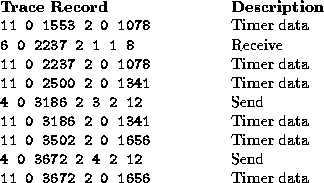
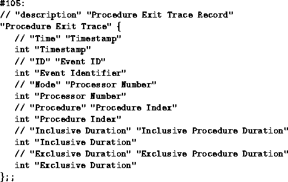

![[DBPP]](pictures//asm_color_tiny.gif)


![[Search]](pictures//search_motif.gif)
Next, we examine in more detail the techniques used to collect performance data. We consider in turn profiling, counters, and event traces, focusing in each case on the principles involved. Individual tools are described in Section 9.4.
The concept of a profile should be familiar from sequential computing. Typically, a profile shows the amount of time spent in different program components. This information is often obtained by sampling techniques, which are simple but not necessarily highly accurate. The value of the program counter is determined at fixed intervals and used to construct a histogram of execution frequencies. These frequences are then combined with compiler symbol table information to estimate the amount of time spent in different parts of a program. This profile data may be collected on a per-processor basis and may be able to identify idle time and communication time as well as execution time.
Profiles have two important advantages. They can be obtained automatically, at relatively low cost, and they can provide a high-level view of program behavior that allows the programmer to identify problematic program components without generating huge amounts of data. (In general, the amount of data associated with a profile is both small and independent of execution time.) Therefore, a profile should be the first technique considered when seeking to understand the performance of a parallel program.
A profile can be used in numerous ways. For example, a single profile on a moderate number of processors can help identify the program components that are taking the most time and that hence may require further investigation. Similarly, profiles performed for a range of processor counts and problem sizes can identify components that do not scale.
Profiles also have limitations. In particular, they do not incorporate temporal aspects of program execution. For example, consider a program in which every processor sends to each other processor in turn. If all processors send to processor 0, then to processor 1, and so on, overall performance may be poor. This behavior would not be revealed in a profile, as every processor would be shown to communicate the same amount of data.
Profilers are available on most parallel computers but vary widely in their functionality and sophistication. The most basic do little more than collect sequential profile data on each processor; the most sophisticated provide various mechanisms for reducing this data, displaying it, and relating it to source code. Because efficient profiling requires the assistance of a compiler and runtime system, most profiling tools are vendor supplied and machine specific.
As its name suggests, a counter is a storage location that can be incremented each time a specified event occurs. Counters can be used to record the number of procedure calls, total number of messages, total message volume, or the number of messages sent between each pair of processors. Counts may be generated by compiler-generated code, by code incorporated in communication libraries, or by user-inserted calls to counter routines.
Counters complement profilers by providing information that is not easily obtainable using sampling techniques. For example, they can provide the total number and volume of messages, information that can be combined with communication time data from a profile to determine the efficiency of communication operations.
A useful variant of a counter is an interval timer, a timer used to determine the length of time spent executing a particular piece of code. This information can be accumulated in a counter to provide an accurate determination of the total time spent executing that program component. A disadvantage of interval timers is that the logic required to obtain a timer value can be expensive.
The use of counters and interval timers in a computational chemistry code was illustrated in Section 3.6: see in particular Tables 3.4 and 3.5.

Figure 9.1: Trace records generated by the Portable Instrumented
Communication Library. The various records contain information
regarding the type of event, the processor number involved, a time
stamp, and other information. Clearly, these records are not meant to
be interpreted by humans.
An execution trace is the most detailed and low-level approach to performance data collection. Trace-based systems typically generate log files containing time-stamped event records representing significant occurrences in a program's execution, such as calling a procedure or sending a message. Trace records may include information such as the type of event and the procedure name or destination task, and can be generated either automatically or under programmer control. Figure 9.1 shows an example of trace records.
Trace-based approaches support a particularly broad study of program behavior. They can be used to examine causal relationships between communications, to localize sources of idle time, and to identify temporary hot spots. For example, an execution trace could be used to determine that all processors are sending to the same processor at the same time. An execution trace can also be postprocessed to obtain profile, count, and interval timer information; to compute higher-order statistics such as the means and variances of these values; and to obtain other data such as mean message queue length in a message-passing system.
The disadvantages of trace-based approaches stem primarily from the huge volume of data that can be generated. Particularly when a program is executing on large numbers of processors, it is easy to generate tens, hundreds, or even thousands of megabytes of data. (For example, if a 20-byte record is logged for every message on a 128-processor system, then assuming messages are sent at the rate of one every 10 milliseconds, trace data will be generated at 256 kilobytes per second, or about 1 gigabyte per hour.) This large data volume has three unwelcome consequences. First, the logging of this data tends to perturb performance, thereby leading to what is called the probe effect in which the measuring of performance data changes their characteristics. Second, the sheer volume of data makes postprocessing difficult. Frequently, sophisticated analysis is required to extract relevant information. Third, the programmer, in order to combat the problems caused by volume, may have to spend considerable effort tuning the data collection process so that only relevant events are recorded while the phenomenon of interest is retained. Tracing then becomes a labor-intensive process. For these reasons, tracing should be used with care and only if other data collection techniques are not available or do not provide sufficient information.
Many parallel programming tools provide some automatic tracing capabilities, for example by generating a trace record for every message generated or received. These capabilities are invoked by linking with a specialized version of a communication library and/or by a runtime flag. Mechanisms for generating user-defined events may also be provided.
In principle, event traces can be interpreted in various ways by using different tools. A stumbling block here is a lack of standards for event log records. One proposed standard is the Pablo Self Describing Data Format (SDDF) designed at the University of Illinois. As illustrated in Figure 9.2, this associates an integer event type with a record description that specifies a type and name for each field.

Figure 9.2: An example of the Pablo Self Describing Data Format.
The data record "Procedure Exit Trace" has an event type of 105
and six data fields, all integers.
A broad spectrum of data collection mechanisms can be used to obtain information about parallel program performance. In general, those requiring the least programmer intervention are also the least intrusive and provide the highest-level, least-detailed view of program behavior; those providing greater detail are progressively more intrusive and demand more programmer effort. Hence, for maximum programmer efficiency, the process of collecting and interpreting performance data should proceed in a staged manner, as follows.
Of course, the actual path followed to obtain performance data will also depend on the functionality provided in a particular parallel programming system.
© Copyright 1995 by Ian Foster